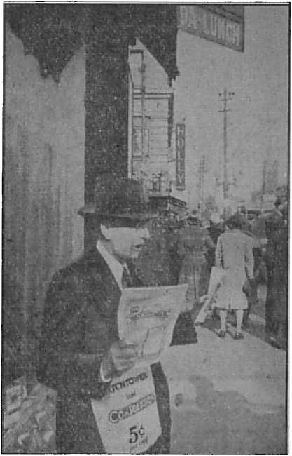
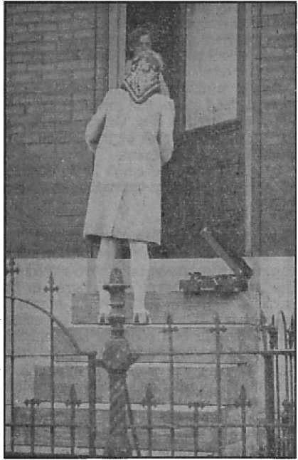
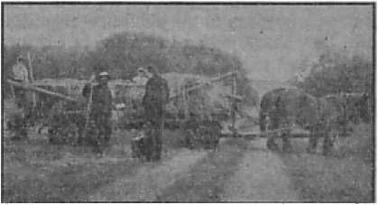

A historical sketch of aviation Round-the-world flights
In Britain — Australia —West Africa
Were You Baptized? and Why?
New York State and The Theocracy
Five Cent* a Copy Vol. XXIII No. 591 • $1.25 In Canada and Published Every
One Dollar a Year May 13, 1942 • Foreign Countries Other Wednesday
Contents
The New Government
Interesting Experiences in Australia
“The Increase of His Government”
“Thy Word Is Truth”
Acts of The Theocracy in New York State (3) 19
Results of the Acts of The Theocracy
At a Big Metropolis Police Station
Under the Totalitarian Flag
Presenting “This Gospel of the Kingdom”
British Comment
Churchill Excoriates “The Good Marshal” 29
Extracts from Churchill’s Address
Chinese Money on British Beaches
Organized Religion Will Be Irrelevant
Published every other Wednesday by WATCHTOWER BIBLE AND TRACT SOCIETY, INC.
117 Adams St., Brooklyn, N. Y.» U. S. A.
Editor Clayton J. Woodworth
Business Manager Nathan H. Knorr
Five Cents a Copy
$1 a year in the United States
?1.25 to Canada and all other countries
NOTICE TO SUBSCRIBERS
Remittances; For your own safety, remit by postal or express money order. When coin or currency is lost in the ordinary mails, there is no redress. Remittances from countries other than those named below may be made to the Brooklyn office, but only by International postal money order.
Receipt of a new or renewal subscription will be acknowledged only when requested. Notice of Expiration is sent with the journal one month before subscription expires. Please renew promptly to avoid loss of copies. Send change of address direct to us rather than to the post office. Your request should reach us at least two weeks before the date of issue with which it is to take effect. Send your old as well as the new address. Copies will not be forwarded by the post office to your new address unless extra postage is provided by you.
Published also in Afrikaans, Bohemian, Danish, Dutch, Finnish, French, German, Greek, Hungarian, Japanese, Norwegian, Polish, Portuguese,.Spanish, Swedish, Ukrainian; also special Australian edition in English.
OFFICES FOR OTHER COUNTRIES
England 34 Craven Terrace, London, W. 2
Canada 40 Irwin Avenue, Toronto 5, Ontario
Australia 7 Beresford Road, Strathfield, N.S.W. South Africa 623 Boston House, Cape Town
Entered as second-class matter at Brooklyn, N. Y., under the Act of March 3, 1879.
Some Aeronautic Facts
♦ Airplanes are noisy, and constant efforts have been made to reduce the inevitable noise incident to the popping of the exhaust, the churning of the air by the propellers, and the “flutter” of the plane itself, actually a vibration. The Lockwood muffler, reducing the motor’s racket 70 percent, carries the noise around a spiral until it exhausts itself before coming out into the open. The placing of airfoils before the propellers and gearing them takes care of another annoying noise. The building of soundproof cabins for the passengers completes the job of eliminating irritating noise.
Now that airplanes are practically noiseless (to those flying in them), it is interesting to read that a Spartanburg chemist claims to have invented or discovered a. substance which may be applied to the plane and make it invisible at a distance of more than a hundred feet.
Over a period of six years the weight of airplane engines was cut 40 percent. Weighing 1| pounds per horsepower originally, they now have come down to about a pound for the same performance. Lighter materials and construction account for this important reduction in weight where weight is a liability.
At the National Aviation Show in New York in 1936 commercially manufactured planes using automobile engines were an outstanding attraction and first provided a cheap private plane within reach of the average man.
The De Haviland Company of Britain has constructed over a hundred different types of machines since the inception of the company.
A small all-metal monoplane to sell for about $1500 is stamped out like an auto and is able to fly 25 miles per gallon.
The world will be grand when man’s God-given powers are all used constructively.
“And in His name shall the nations hope.”—Matthew 12:21, A.R.V.
Volume XXIII Brooklyn, N. Y., Wednesday, May 13, 1942 Number 591
Those That Fly
AVIATION is the latest and most remarkable advance made by man in the business of getting from place to place with comfort, speed and safety. The really amazing accomplishment shown in, this invention is made still more astounding by the very short period of time in which it leaped from fancy and infancy to full maturity. Other inventions were relatively slow in their development, but aviation attained full stature within a few short years. The remarkable fact has been noted by students of the Word of God, and it is but reasonable that, they should have sought for some connection between this modern-day marvel and the predicted and expected time of blessing of all the families of the earth foretold in the Word. So it was thought that Isaiah 60:8 referred to. the airplane in the words, “Who are these that fly as a cloud, and as the doves to their windows?” But a further consideration of the prophecy as a whole showed that it has a deeper significance, even as Daniel 12:4 refers not to rapid transportation and to increase of secular knowledge, but to increased activity in searching for the meaning of the prophecy itself.
While thus there appears to be no direct reference in the Scriptures to any of the modern inventions, yet the fact of their abundance and scope within comparatively recent times has an indirect bearing upon this “time of the end”; for these inventions have contributed toward the rapid spreading of information by the printed page and thus made possible the wonderful spread of the Kingdom message in harmony with the words of Jesus, “This gospel of the kingdom shall be preached in all the world for a witness unto all nations: and then shall the end [of Satan’s world-rule] come.”— Matthew 24:14.
As the Reformation released human minds from the thralldom of superstitious fear and opened the way for an ever-increasing circulation and study of the Bible, it paved the way for free and open inquiry into all things, and thus led on to the numerous inventions of the .present. It is for this reason that (on page 240) The Harp of God (Watch Tower Bible & Tract Society, 1921) noted a connection between these inventions and discoveries and the days of the presence of the Son of man.
To return now to the consideration of aviation and some preliminary inventions. When some daring ancestor of modern man first conceived the idea of climbing on the back of a less fortunate creature in order to get over the ground faster, or, at least, with less effort, it must have given him quite a thrill. It is also probable that there were plenty of onlookers who predicted that it wouldn’t prove practical or useful or successful. It is hardly likely that this daring innovator started out with mounting a horse. He probably was content to experiment with a less frisky steed—a donkey, perhaps. Anyway, he tried it, and kept it up, and after a while others said, “You’ve got something there,” and also started to grab donkeys for themselves, and pretty soon practically everyone of any account was riding a donkey.
But it wasn’t long before the innovators (there are always innovators, somehow) noticed that a horse went faster than a donkey, and hit upon the unheard-of notion they might be able to ride it. They doubtless met with some difficulty in accomplishing the trick, but the thing was done, first by a few, then by more, and it became a common thing, and people just rode along with the greatest of ease, that is, the greatest of ease they could think of until somebody who really was something got the idea that he could hitch the horse to a box with wheels under it, and save himself all the ups and downs associated with horseback riding. He tried it, and it really worked, except for a breakdown now and then. It was safe and smooth riding, just as imagining all this is a fairly safe use of the imagination. Nobody really knows how these things got a start in the past, but it must have been something along the lines here suggested, humanity being what it is.
Other means of transportation, such as rowing, and later sailing, developed in a somewhat similar manner, and all these methods had a considerable number of variations as far as the details were concerned, but the main idea was to get somewhere and get there as fast as possible.
It was a long time before an improvement on these relatively simple methods of travel was found. Then came the idea that steam could be used to propel coaches and vessels, and railways and steamers were the result. Later electricity and combustion engines were used, and electric cars and trains, automobiles and buses appeared. All these were constantly improved, step by step; for it seems that humans see things a little at a time. Hence there was always something new to keep them interested and forward-looking.
But this article is about travel by air and the airplane. Coming to that, we find that it is only in comparatively recent times that men have done anything about flying, with suitable or not so suitable contraptions. The idea goes back quite a way, however.
There is a myth of a fellow, Icarus, who got himself a pair of wings, with the help of Daedalus, his father. He flew, but ventured too near the sun, so that the wax with which his wings were attached melted and he fell down and it was just his luck to fall into the sea. There is a sea called the Icarian sea, and this is the story that is stuck with it. Like all religious fables, this one disproves itself. The higher one flies, the greater the cold. So the whole tale falls down with Icarus.
The myth, however, shows that men had for a long time been thinking about flying. The idea would probably never have occurred to them had it not been for the fact that the great Creator made “fowl that may fly above the earth”. Man is not so original; he merely combines and utilizes what he sees; and so the wise man says, “Is there any thing whereof it may be [truly] said, See, this is new?” —Ecclesiastes 1:10.
Archimedes, in the third century before Christ, announced certain geometric principles that would have to be observed if man was ever to fly. Those principles are actually followed today. Archimedes (of “Eureka” fame) was no monkey.
Centuries later, Fauste Veranzio gave the matter of flying some thought and boldly tried to put his ideas into effect by jumping off a high tower in Venice with a sort of combination parachute and plane. This was in A. D. 1617. After that it was quite a while before anybody else wanted to try his own or another’s wings. One Francesco De Lama did draw a picture of a flying boat which he thought might work. It had four spherical vacuums held together by a framework and supportifig a boat with oars and sails.
There is no record that he did anything about it. Maybe he wanted someone else to try it first.
In the beginning of the eighteenth century Karl Friedrich Meerwin thought out a way of flying by means of a glider. He figured that it would take a plane of some 130 feet in area to support the average man; a fairly good estimate according to later findings on the subject. But actual flying came much later. The Wrights experimented both with gliders and with motored planes. Before Wilbur and Orville, ,however, started their experiments, Alberto Santos-Dumont made a kite-like box plane and flew, or rather hopped, some distance without any serious mishap; but his plane was not a practical flying instrument. He is sometimes referred to as the first man that ever “flew in public”. About the time Wilbur and Orville Wright were carrying on their experiments Dr. Samuel P. Langley experimented with steam-driven planes. In fact he had been doing so since A.D. 1896.
The Wrights carried on their experimental flights privately until sure of themselves. They succeeded in making a plane that would remain balanced and an engine that would run it. In December, 1903, Orville made his first actually successful flight at Kitty Hawk, North Carolina, and in 1908 the brothers began to give demonstrations of their success.
Glenn H. Curtiss, another American experimenter, early became proficient in the handling of an airplane, and did much to popularize aviation. In 1910, so rapidly did the invention progress, he flew from Albany to New York, following the Hudson, and stopping to refuel at a point near Poughkeepsie. The superintendent of the Poughkeepsie Insane Asylum invited Curtiss to use the grounds of that institution as a landing field, saying that most flying enthusiasts landed there eventually anyhow. His invitation was not accepted.
The machine used by Curtiss on this epoch-making flight was a biplane, something like a box kite. It outdistanced a train chartered to follow it on the time-schedule of the Twentieth Century Limited, an impressive demonstration.
Fliers at that time sat in the front of their planes, exposed to the weather, rather precariously perched on what was little more than a board. They had not learned that making oneself comfortable adds -to one’s efficiency; and it may well be that many early mishaps were due to this oversight. It is a far cry from the dangerous and rather rickety contraption flown by Curtiss to the luxury airliners of the present.
It seems that the idea of flying was entertained and that experiments were made by many individuals; so the honor would appear quite clearly not to be due to men, but to the One who made man. Though the names of Dumont, Curtiss and Langley stand out among the early pioneers in the field of aviation, to the Wrights is acceded the credit for the careful and protracted study and experimentation that made aviation a practical reality. Their plane is said to have been the first to apply proper flying principles. This plane, used at Kitty Hawk, was to have been kept at the Smithsonian Institution, at Washington, D.C., and properly marked, but by an error in shipment it was sent on to London, and is now kept in a museum there. Efforts have since been made to have it returned, but nothing definite has been done on the subject.
The World War of 1914 gave great impetus to the progressive improvement of airplanes and the development of flying. The warding nations made abundant if not commendable use of aircraft, trying to inflict all possible injury upon their respective opponents. Thus the grim spur of necessity speeded up the progress of aviation.
After the war the constructive use of the airplane asserted itself and progress was rapid and steady. Historic and spee-tacular flights, were the order of the day. Lindbergh’s transatlantic flight stands out as epoch-making, although he had been preceded by Alcock and Brown, who flew from St. John’s, Nfld., to Ireland, in 16 hours 12 minutes, about half the time it took Lindbergh to fly from New York to Paris, some 1600 miles farther. He did it alone.
Flying across the Atlantic was an exceedingly hazardous undertaking, as was demonstrated by the many unsuccessful attempts made to accomplish this feat. The west-east flight, although considered the easiest, cost the lives of many who made the attempt. In September, 1927, Lloyd Bertaud and his party lost their lives in trying to fly from Old Orchard, Maine, to Rome; and the same month witnessed the unsuccessful attempt of Capt. Terry and Lieut. Jas. Metcalf to fly from Harbor Grace, Nfld., to Croydon, England. Three more fliers, that same year, left Roosevelt Field, New York, to fly to Denmark by way of Harbor Grace, but did not succeed in making even the first lap of the journey.
More successful were Chamberlin and Levine, who flew from New York to Eisleben, Germany, June 4-6,. 1927, in 42 hours 31 minutes. Byrd, Noville, Acosta and Balchen made Ver-sur-Mer from New York, June 29-July 1. Others followed in succeeding years. Some made it; others were never heard from again. Ruth Elder, of Lakeland, Florida, with her navigator, Capt. G. W. Haldeman, fell into the Atlantic ocean near the Azores on their way to Europe, in October, 1927. They were picked up by a passing oil-tanker.
Flying overland was hardly less dangerous, and in some respects falling into the ocean may have been preferable. Amelia Earhart, who made the perilous Atlantic crossing dangerously, said afterward that she kept on going when once in the air, although her plane developed engine trouble, because she would rather drown than burn, as she might well have had happen if she had returned to land on the rocky shoreland in the dark.
From 1926 to 1934 there were sixteen major passenger airplane disasters, involving the death of 194 persons. Yet in between 1924 and 1927 planes of the British Imperial Airways flew two million miles and carried 36,500 passengers without fatalities.
The effort of Nobile, in the summer of 1928, to fly to the pole for purposes of exploration met with disaster when his dirigible crashed. Though he carried a wooden cross “blessed” by the then pope (some say a wooden image of the virgin), he quarreled unmercifully with his associates, as he had on a previous flight quarreled with the explorer Amundsen. Amundsen on this later occasion went, in an airplane, to look for Nobile’s party, and was never heard from again. Nobile and certain of his companions were rescued. Nobile, the first to leave, in giving an account of the disaster, contradicted himself repeatedly, and, in his first report, omitted to even mention the death of the chief mechanician in the crash. The wooden Indian (virgin, rather) got through 0. K. It was to have been planted at the top of the world, but did not make it.
Polar flights and transcontinental, transoceanic and round-the-world flights followed one another in rapid and bewildering succession. They were made with more or less adequate preparation and much daring. A list of these flights would now be monotonous ,reading, but at the time they were made they were news. Pioneering in new and hazardous territory always makes interesting and thrilling reading, and the conquest of the air was the result of the opening up of a territory that had intrigued the minds of men since Adam and Eve first watched the graceful flight of birds from the security of their paradise-home.
Faster and farther flew the planes, a,s they also ventured higher and higher. The feats accomplished by the heavier-than-air craft put the almost equally amazing yet less breath-taking progress of lighter-than-air craft in the shade. Yet the, dirigibles, balloons and blimps also came in for attention periodically; and their accomplishments made excellent newspaper copy, especially when some unforeseen dangers or catastrophes heightened the dramatics of their performances. However, consideration of these must be left for another number of Consolation.
It was not long until the not altogether uncontrolled imagination of Jules Verne, the author of Round the World in Eighty Days, was far surpassed by actuality in this most marvelous time of earth’s history thus far.
No attempt will be made here to recount or even to list all the various and successively thrilling flying ventures of pioneering enthusiasts. These have all come in for attention in the columns of Consolation (formerly The Golden Age) as they took place. A few, however, may be mentioned briefly in passing. Lindbergh’s flight has already been referred to. The fact that he flew solo and made the destination determined upon, as well as the fact that he was at the time little more than a boy, all played a part in the appeal to human hearts and minds. Lindbergh’s recent unfortunate identification with Nazi sympathizers, whether justified or not, has detracted greatly from his popularity. But that is beside the mark here. No doubt his flight, uneventful enough in itself, was a remarkable achievement for the time and the standards of aeronautics then attained.
Lindbergh’s jump across the pond was in many respects matched and in some surpassed by the mischievous achievement of Douglas Corrigan years later, as he hopped “casually” from New York to Ireland “by mistake”. The interest appeal was similar, that of youth doing great things simply and with modesty. Corrigan was 30, but his exploit was characterized by youthful nonchalance. “Corrigan’s clipper” was purchased for $310. He assembled one power plant from the best parts of two old Wright engines, and made other improvements (badly needed), at a total cost of $900. Instead of de-icers he had a 15-foot pole to knock ice from the wings. When he got ready to cross the Atlantic he went without telling a soul. If he had not “made it” no one would ever have known what had become of him. Out of 125 attempts to cross the North Atlantic since 1929, Corrigan’s was the sixth successful solo attempt. The others were Lindbergh, in 1927; Amelia Earhart Putnam, in 1932; James Mattern (to Norway), in 1933; Wiley Post, to Berlin, in the same year; Felix Waitkus, in 1935. Amelia Earhart and Felix Waitkus were forced down before reaching their intended destinations, but, fortunately, they were over land at the time.
Commenting on Corrigan’s flight, the London Express said, “It was a foolhardy flight. It was an unnecessary flight. It was great. It was grand. It is about the most remarkable transatlantic flight to date.”
The Northern Whig, of Belfast, said: “Flying the Atlantic in an old, dilapidated monoplane, Corrigan turned a gamble with fate into a brilliant and jaunty triumph. Never has there been a longdistance flight so unceremonious and impudently daring, but this irrepressible flier, who has Irish blood in his veins, risked everything and by a combination of audacity and skill and good fortune came safely through and made transatlantic flying look ridiculously matter-of-fact.”
Yet flying the North Atlantic was not matter-of-fact, nor could the safety of envisaged airline passengers be left to such chances as were taken by Corrigan. Careful and painstaking attention had to be given to every factor involved, including weather, passengers, comfort, pilots, and finally the airplanes themselves and the thousand and one parts of which they are composed. The pioneering flights of individual men and women only prepared the way.
The first commercial transatlantic round-trip airplane flight was made by Dick Merrill and Jack Lambie, in May, 1937. On that occasion they brought back from England photographs of the coronation of George VI. At that time Merrill had a record of 3,000,000 miles flown, with but one accident.
British flying was for a time well in advance of American attainments. This was also true of aeronautic development in other European countries. But in due course America’s commercial air lines became the best in the world. In America the emphasis was placed on passenger, mail and express transport, while in Europe the concern was chiefly the building up of military air power.
In Britain there were intrepid men and women who had pioneered for the Empire as Lindbergh and others had been pioneering in and for America. The first solo crossing of the North Atlantic from east to west was made by Capt. J. A. Mollison, in August, 1932. His plane was dubbed “the flying gasoline tank” because he sacrificed all the interior furnishings of the plane to make room for the important fuel; great tanks of which surrounded him on all sides. Mollison also made numerous other important flights, such as from England to Cape Town and to Natal, Brazil, by way of Senegal, Africa. The second time Mollison crossed the North Atlantic he was accompanied by his wife, Amy Johnson, also a noted British flier. They eracked up near Bridgeport, Connecticut, but escaped with injuries.
The South Atlantic also was crossed solo, by Capt. Bert Hinkler, sometimes called the “Australian Lindbergh”, because he made a remarkable solo flight, by stages, from England to Australia.
Geo. Stainforth, another British flier of note, in February, 1933, attained a speed of 407y2 miles an hour, the record at that time.
While Britain and America were thus making records, Germany was also doing its share. On January 1, 1938, the huge four-motored German transport plane Brandenburg completed at Floyd Bennett Field the first nonstop flight from Berlin to New York, a distance of 3,950 miles, in 24 hours 56 minutes 37 seconds. The aviators followed the great-circle course, which takes into consideration the curvature of the earth and is the shortest possible distance between any two points. This course from any one point to another can be determined by stretching a string between the two points as marked on a globe. As the earth is practically spherical, all flat maps are always more or less distorted and only a globe can give the proper proportions of the various geographical subdivisions. However, flat maps have now been made that are distorted in such a manner as to mark great-circle courses, for use in marking air routes, the only ones that can follow an absolutely direct line.
On the occasion of this German flight the departure, scheduled to take place from the great German airport Tempelhof, was made from another point. Had the venture failed it would then have been denied and so Nazi “prestige” would have been upheld!
The first trip by air from Moscow to the United States was made nonstop by way of the North Pole. This trip also was wrapped in mystery at its beginning. The man who flew the single-motored plane was Valeri Chekaloff. He sat at the controls the whole of the sixty-three hours it took to make this hop from Moscow to Vancouver, Washington. The Russian fliers passed not far from the magnetic north pole, to which the compass points, although it is 1500 miles to the south of the true north pole. This magnetic pole, otherwise reliable, becomes treacherous when navigators fly too near, when they have to rely on the stars for guidance. The flight in distance would equal one made from Barrow, Alaska, to the Panama Canal.
The Russians at the time boasted that only Communists could have made such a flight, although Admiral Byrd and Floyd Bennett flew over the North Pole in 1926. It is, however, probably true that those reared in cold latitudes are best fitted for flying in the far north. A previous flight over a similar route, by Sigismund Levanevsky, in 1935, failed, due to a mechanical defect.
Levanevsky was called the “Lindbergh of Russia”. He effected the rescue of James E. Mattern, American round-the-world flier, lost in Siberia, in 1933, and missing several days. In 1934 Levanevsky aided in rescuing 101 Russians adrift on ice off Kamchatka after the crushing of the ship Chelivuskin. On that occasion he won the title “Hero of the Soviet Union”, which, like similar honorary titles, means little.
The first successful over-the-pole flight, in July, 1937, was followed by others not so successful. Two Russian navigators were forced down in New Brunswick, Canada, in May, 1939, in an attempt to fly nonstop from Moscow to the World’s Fair in New York, following the great-circle route.
Outstanding among aerohistorics is the polar expedition by Russian airmen in May, 1937. The planes left from Rudolph island, northernmost habitation of man. The fliers established a base close to the North Pole and remained there for nearly a year, making observations and collecting data for use in planning transarctic flights. The planes brought a light-weight fur-lined house, weather observation instruments and other equipment, and then left four meh behind at the pole to collect the data, and a dog to bark when polar bears came too close.
The Russian Professor Ludol Samo-ilovitch claimed the Russians were the first to really reach the pole, Peary having failed by a distance of at least a hundred miles. Certain it is that the Russians discovered a new way. of getting back from the pole. The floe on which the camp was located drifted southwest at a steady rate, and by February of the following year the camp had drifted to the coast of Greenland, a distance of over 750 miles, and the scientists were rescued from their then dangerous location by icebreakers. The Soviets claimed the pole for themselves, and, for that matter, they are welcome to it. There is nothing but water and ice there anyway; no land at all.
Thus the airplane played a prominent part in important exploration efforts. Admiral Byrd took a plane with him to the Antarctic, though he went there by boat.
As for the Italians. The Montreal stop of -the Balbo mass flight was reported at the time as follows:
Dropping gracefully out of the sunlit skies of early afternoon, like majestic birds, twenty-four seaplanes, constituting Italy’s mighty aerial armada, came to a safe anchorage here today (July 14, 1933), completing another leg of the epoch-making flight to Chicago. The flagship “Balbo”, piloted by Balbo, was the first to alight. As his ship was nosing down there eame to him, even beyond the dying roar of his motors, a tremendous salvo of applause from more than 200,000 persons who lined the river bank.
Going round the world has undoubtedly an appeal, especially since Magellan first tried it. Phineas Fogg, in Jules Verne’s novel, made a trip “round the world in eighty days”. That was considered an accomplishment at the time the book was written. In 1889-1890, when the trans-Siberian railroad was first completed, a newspaper reporter, Nelly Bly, made her trip around the world in 72 days 6 hours, stopping at Paris to interview Jules Verne himself. Colonel Burnley Campbell made the trip in 1907 in forty days. John Henry Mears, in 1913, did it in 35 days 21 hours, making use, for the first time in such a tour, of the air, but flew only across Puget Sound.
The American army fliers in 1924 made the next round-the-world trip of note. Their “flight”, however, was more a succession of great hops. The planes were stormbound at Dutch Harbor for two weeks, then flew to the end of the Aleutian islands and faced a stretch of 880 miles across the North Pacific to the Kuriles. They were forced down in the night on the Kamchatkan coast, and rode at anchor until morning, when they went on to the Kuriles. Then on to Japan, China, Burma, Calcutta, Karachi, Bandar Abbas, Bagdad, Constantinople, Bucharest, Vienna, Strasbourg and Paris. Then to London and Kirkwall, Scotland. Then they flew to Iceland, Greenland, and Labrador, and thence to New York by way of Newfoundland. The actual flying time was a little over fifteen days, but actually the fliers were away 175 days; not a very good record, but a start nonetheless. While one of the planes was wrecked en route, and another was forced down, there were no fatalities, and two planes made it all the way, in spite of great hazards and difficulties.
Succeeding round-the-world flights reduced the time bit by bit, until Howard Hughes, in 1938, made it in less than four days, an almost incredible accomplishment. Commenting on this flight, the New York Times said:
We can say with perfect confidence that the airplane of the future will be safer, will go faster and will have a longer flying radius than the ones we have today. The time was, say twenty-five years ago, when such a prediction would have received an unquestioning welcome. Most of us then thought all inventions good and the invention of the flying machine particularly good. Generations of men had dreamed about it. We had it. We were happy to live in an age that could produce such marvels. But now another thought is present. While airplanes were carrying Hughes around the world, Corrigan to Ireland, Donald Bennett westward over the Atlantic, other airplanes, employing similar principles of flight, were engaged on quite different errands. The marvelous controls invented by the Wrights, the engines for which a small army of inventors might claim credit, the delicate instruments for guidance in flight, were being used in China and Spain to kill civilians. At any time they may be used for the same purpose in other countries. The military value of such killings is doubtful. Nevertheless, we have to expect them in any future war.
The forebodings of the Times were realized in the bombing of Warsaw, London, Coventry, and other places. When one contemplates, in the light of these developments, what a vast amount of death and destruction have been wrought by means, of the airplane, and what far greater damage it may yet be used to do, the question surely does arise as to whether this wonder of this “time of the end” is a blessing or a curse. The truth of the matter is that all good things may be and are put to evil 'uses under the present demon-dominated organization of the world. No good thing will long remain a blessing when those upon whom it is bestowed use it for evil ends or when the wicked are in authority.
It is because the Holy Scriptures point to the now imminent day of righteousness under Christ, the invisible King, that one may rejoice in these modern-day inventions which may ultimately be used for the general good of all who are of good-will toward Jehovah God.
The great millennial Sabbath follows the preliminary cleanup of Armageddon, now at the door. Then righteous men will rejoice in the abundance of peace, and in the fullness of God’s blessing for those who shall live upon the earth forever. The earth and its fullness belong unto Jehovah, and He will give it to the righteous. ‘The heaven, even the heavens, are Jehovah’s, but the earth hath He given to His human children.’ ‘He created it not in vain, but formed it to be inhabited.’ ‘Heaven is my throne, and the earth is my footstool, saith Jehovah.’ “I will make the place of my feet glorious.”— Psalm 115:16; Isaiah 45:18; 66:1; 60:13.
Tumbling Six Miles
♦ There is nothing to the idea that one falling loses his senses. Near Chicago, Arthur Starnes leaped from a plane 31,400 feet in the air. For about 8,000 feet he was in a succession of violent, somersaults, but his head was clear all the time. Three miles from the earth he righted his body by holding his right arm out sidewise from his body like a railroad signal. At a quarter of a mile from the earth he opened his parachute. For a moment this gendered him senseless from the jolt, but less than three seconds later his second parachute opened ahd he slowed down to an easy landing in a cow pasture. He had been falling 2 minutes 15 seconds before he opened his first parachute, and if he had waited 8 seconds longer than he did he would never have needed to open it at all, but would have hit the earth at a speed of about 128 miles an hour. Starnes’ free fall of 29,000 feet is the longest on record. The previous (Russian) free fall record was 25,925 feet. The Russian opened his parachute only 650 feet from the ground.
Around the World in 36 Days
♦ The Pan American clipper was far out over the Pacific when it learned of the attack on Pearl Harbor. A commercial 85,000-pound flying boat, carrying 72 passengers, it could not afford to get entangled with any fighting planes; so it headed for Auckland, New Zealand, and when the time came to return home its captain, Robert Ford, thought the longest way round would be the safest way back. So he flew to New Caledonia, thence to northern Australia, thence to India, then to a Red Sea port, then across Africa, and on to Brazil and back to New York. It wasn’t quite around the world, but it was 24,686 miles. The boat came back safe and sound, but it got back too early in the morning and the authorities at La Guardia field made it circle round and round for 62 minutes, until daylight permitted it to settle down as if nothing had happened. The trip took 36 days.
War Babies of the Skies
♦ The capacity of a standard railway tank car is 8,000 gallons, but a single large four-engined bomber, when fully loaded for flight, carries as much as 11,000 gallons, and this may last it less than 24 hours. An ordinary automobile could go around the world five times on the amount of gas used by such a monster every 24 hours. Larger yet, and with an even bigger appetite for gas, is the American B-19, able to carry a cargo of eighteen tons of bombs, and to fly to Europe and back, 7,750 miles, nonstop.
Airgraphs
♦ The British are now carrying mail between Britain and their troops all over the world, and in both directions, by packages in which 4,250 letters go in a single pound, or 264 in one, ounce. The letters are photographed on motion picture films, each page occupying one frame. On arrival the letters are photographically enlarged and delivered. The plan works successfully even if the carrying plane is shot down. All that is necessary is to make a fresh print of the original film.
Just Too Bad for the Geese
♦ It is just too bad for the flocks of wild geese when they don’t get out of the way of the airplane; for their wings have been found in the planes which they innocently wrecked. Also, and this is more than too bad, it is well established that even a single bird can wreck an airplane if it hits it in a vital spot, and there is a well-authenticated ease, in Canada, of a crash, that took twenty lives, due to the wild geese getting in the way.
Good Reactions in Leicester
♦ The most remarkable Theocratic convention held in the British Isles to date has been graphically described and illustrated in The Messenger, both the American and the British edition. Because of the wide publicity given to the event by the Press, friend and foe alike know that the city of Leicester was the location of the Assembly.
Perusing the pages of the Society’s souvenir one is transported anew to the convention to live over again those halcyon days of what might be described, when thinking of the booths in the De Montfort Gardens, as “the feast of tabernacles”. And yet, as the queen of Sheba said of the glory of Solomon, “the half was not told.” How could it be? Even a grudging Press was compelled to characterize the event as a “Five Days’ Wonder”, so stupendous was the spectacle of Jehovah’s organization in action.
And neither is the purpose of this article to amplify or supplement accounts already given. No, it is of the aftermath of the Assembly and of its effects on the people that I would speak. For, living in Leicester, I have often been asked by Jehovah’s witnesses how the public reacted after getting over their first amazement, and after the witnesses had ‘folded their tents like the Arabs, and as silently stolen away’. Let one or two incidents speak for themselves.
What of the military? For did not the Press give prominence to a fracas or two in which a few rowdy soldiers were involved? Well, soon after the convention the writer was standing “pavement witnessing” in a main thoroughfare, when a military officer, leaving his elegant woman companion, heads straight for him. Anticipating trouble the witness braced himself to receive it. But, no, with every mark of good breeding and gentleness the officer spontaneously asks for a copy of the booklet, and with a few kind words departs.
Again, a delicate sister, not so young as she was, stands in the street with a few booklets, fan-wise in her hand, when three young women of a. coarse type come by. One of them seizes the booklets from the weak hands of the witness, and scatters them across the pavement. A passing military officer immediately stoops down, picks up every one of the booklets and graciously returns them to the witness, thus providing a lesson to the young women which it is hoped they would learn.
And the Home Guard ? Did not some of them raid “Camp Gideon”? Yes, they did. But calling at a home just after the convention, a witness was told in a self-conscious manner that the man addressed was a Home Guard. Said he, “I suppose you’re against us because of that trouble.” ‘Well,” the witness replied, “I certainly did not admire the men who let down tents in the darkness on helpless women and children, but we do not magnify the importance of an isolated incident.” Result: One Home Guard friend hears record and takes a book and booklet.
Back-calls on people who entertained witnesses at the Assembly have provided wonderful experiences, often resulting in the formation of Model Studies. It is possible to relate only one or two here. Said one hostess, a boardinghouse keeper: “They were the nicest people I have ever entertained. The little girl’s knowledge of the Bible astounded me. My son-in-law was so impressed by the demeanor of one of your people standing in the gutter, in the face of the insults of passers-by, that he got out of his car and went over to get some of his literature.” Result: A Model Study at that home.
Another case. Says the person of goodwill to the witness now holding a Model
Canoua do Reino em Manaquiri, Nhozinko (Kingdom canoe on the Amazon)
Study at her house : “To think of the times I have turned you people away, and called you a nuisance.”
And so one might go on; but time and space forbid. Let the following advertisement, taken from the local Press recently, testify to the results of the Assembly.
Jehovah’s witnesses announce: That owing to the increased interest in the .City and for reasons of general convenience, the Leicester company is now divided into Two Units: Unit No. 1 continues to meet at Kingdom Hall, East Park Road ; and Unit No. 2 meets at 76 High Street (over Halford’s). Meetings at both Halls: Sundays 5 p.m., Thursdays 7: 30 p.m. No collections. People of Goodwill welcome.
Thus the “sheep” in this city have a splendid opportunity to come into the fold of the Good Shepherd, there to find protection and life. Those who sighed and cried for the hostility shown to Jehovah’s witnesses at the time of the Theocratic Assembly have the opportunity of receiving the “mark” of Divine approval on their foreheads before Armageddon breaks. (Ezekiel 9)—Frank R. Freer.
Interesting Experiences in Australia
♦ On July 3, 1940, eighty-three aliens arrived at a local prison from New Guinea, among them seventeen German priests. Soon after their arrival, the archbishop of Sydney, Dr. Gilroy, made personal representation on behalf of these seventeen priests, and had the time of closing of their celldoors advanced from 4 p.m. to 8 p.m. each day. Six and a half days after their arrival at the prison the seventeen Roman Catholic priests were removed to a convent near Sydney.
Contrast this, if you please, with the treatment meted out to two of Jehovah’s witnesses. These men, refugees from Hitler’s devilish regime of terror and tyranny, arrived in Sydney long before the war began, and led peaceable, quiet lives. When the department of the Interior authorized the admittance of these men to this country, they knew that they were Jehovah's witnesses. These men, for whom to return to Germany would be sheer suicide, are now interned, and branded Nazis by a lickspittle newspaper whose one aim is to dish out “Catholic Action” propaganda and drag in the dirt everything that is decent and honourable.
BIBLES
In addition to the seizure of the stocks of books, records and phonographs, the Commonwealth seized and locked up thousands of copies of the authorized version of the Bible which were purchased by the Society from the Oxford and Cambridge University Press, London. These Bibles the Commonwealth refuses to release.
The Society’s representative advised the authorities that London was ready to ship further stocks, but that he required absolute assurance that the shipment would be delivered on, arrival. This, according to their reply of May 9, they were not prepared to guarantee. Com sequently, on May 12 the following telegram was sent to the attorney-general at Canberra:
Your telegram ninth instant delivered my office while absent. I shall be no party to anything that insults the Almighty God, His servants Jehovah’s witnesses, His Majesty the King of Britain, which, in the words of
Da esquerada para a direita os Innao forao batisador Miguel Fernandes e Joao Fernandes e Antonio Pestarra que ministrou o batismo (Baptism; interior of Sao Paulo, Brazil)
“Get your latest Watchtower and Consolation” Charlotte, North Carolina
Churchill, stands now for freedom. Action of Federal Government in declaring Christianity illegal in Commonwealth wholly contrary to British tradition. Any persons who think they can dissolve the Theocratic Government of Jehovah God are either demonized or crazy. Bibles referred to in my telegram will be distributed by loyal British subjects. Be advised that a wave of indignation has spread over nation and that we still have in this country thousands loyal Britishers who will stand by Britain in this hour of need notwithstanding fact that leaders have betrayed her. Please give me assurance in writing that Bibles will be immediately handed me on arrival. I have already been humbugged by customs and other officials who are evidently more concerned about serving their foreign controllers at Vatican City than they are about performing
Doorstep phonograph witnessing in St. Louis
duty according to their oath of allegiance to His Majesty the King.—MacGillivray.
The attorney-general, in replying, merely referred back to his evasive telegram of May 9, above mentioned. On May 28 a further telegram was sent as follows:
Replying your telegram ninth May. First portion is quite clear, but latter portion puts restrictions on distribution of Bibles. I am not aware that His Majesty King George, Defender of the Faith, has at any time given his ministers authority to prevent people from receiving copies of the Bible or confined the distribution of same to any particular sect. All Christians are Jehovah’s witnesses (Isaiah forty-three ten); and since Christians are the only ones using the Bible, your edict would mean total prohibition of distribution of the Bible in the Commonwealth. Already the Commonwealth is responsible for locking up millions of Bibles and books containing Bible sermons in rat-infested buildings. Mission boats worth thousands of pounds unlawfully taken from their moorings in Sydney have been in the water unattended for four and half months and may now be considered a total loss. My representations to Canberra have been of no avail. Is it any wonder that the good people of this land are beginning to ask whether or not the Government is anti-Christ ? —MacGillivray.
Since the ban the little army of Jehovah’s witnesses have concentrated on witnessing with the Bible. All stocks of the Bible held by the Society were confiscated and locked up, but we have been able to get further supplies locally. The publishers have found the Bible work an excellent means of reaching the people, talking to them about the Kingdom and arranging to call back on those who manifest interest. Ways and means are found to get the books and records to those who are genuinely interested. The result has been that back-calls have now reached the former high figures, and the indications are that they will definitely increase month by month in the future. —1942 Yearbook of Jehovah’s witnesses.
After the Ban in West Africa
♦ The Bible may still be circulated in West Africa, though it is illegal to circulate books or tracts explaining it, or casting reflections on the religion racket. The West African Pilot, dated at Lagos, Nigeria, November 25, 1941, has an
Witnessing in the rarals, Deer Lodge, Montana
15
announcement of a convention of Jehovah’s witnesses held that month at Aba, Nigeria, followed by a newspaper report of the same, which many will enjoy:
Jehovah’s witnesses are holding a Theocratic Convention at Aba on November 1 and 2. Representatives from all parts of Nigeria are pouring in, and from what we have seen they look to be a happy lot. When questioned why they are so happy, they reply: “Because we have had the inestimable privilege of being the publishers of Jehovah’s Kingdom and of the day of His vengeance.” Truly. As it was in the days of Noah so it is today. Isaiah 34:8, Luke 21: 22, Matthew 24:14, Luke 17: 26-30.
Facing the facts we have seen clearly what Jehovah’s witnesses have been telling us for the past 18 years is having its fulfilment.
The publishers have informed us that they are anxiously awaiting the declaration of peace and safety which will be the sign that the battle of Armageddon is imminent.
That battle will clean the earth of wicked men and angels, bring untold blessings to the people of good will, and vindicate the name of Jehovah.
We wish the conventioners a happy time in Aba, including Mr. W. R. Brown, who has already arrived by train from Lagos.
jehovah’s witnesses hold convention
Aba, Nov. 5.—The Aba African Club Hall, duly decorated by religionists for another purpose and over which was flying a large convention banner, was overcrowded with men and women numbering up to a thousand on the morning of November 1. They are Jehovah’s witnesses and had come from all parts of Nigeria to hold a two days’ convention.
Special features of the Convention were the instructions given to the publishers regarding how they should now be engaged in comforting all that mourn. On that subject Mr. W. R. Brown delivered a public lecture on Sunday afternoon, at which lecture many had to stay out, as the Hall could not contain the large masses of people who were thirsty for the Truth.
The number of people now forsaking religious churches and taking their stand on the side of Jehovah God and Christ Jesus is borne out by the number of those who symbolized their consecration and were baptized at the Aba river on Sunday morning, November 2. One hundred and fifty-four persons were immersed.
By the willingness of the workers, cooks, stewards, and others who served at the cafeteria, catering for the Conventioners, one could realize the spirit of union that exists among Jehovah’s witnesses.
Special favour of Jehovah is the cessation of rain throughout' the entire time of the convention.
“The Increase of His Government”
♦ In view of the world conditions that rapidly grow worse the above result [of the work of Jehovah’s witnesses in the earth in the year 1941] would normally be contrary to what might be expected; but all things are possible to Almighty God, who is working in his faithful servants “both to will and to do of his good pleasure”. Therefore this marvelous placement of Kingdom literature bespeaks that by his help Jehovah’s covenant-keeping people are surmounting the obstacles and demon opposition and are ‘putting on more steam’, because now the time is short and it is desired to turn in to the King a faithful report, showing increase of the Lord’s Kingdom interests, or “goods”. This stacks up still higher the pile of stones of testimony which have been piled in the midst of the antitypical Jordan river as Jehovah’s people, under the leadership of the Greater Joshua, Christ Jesus, pass through the midst of the people that are rushing down the broad way that ends in the Dead Sea of destruction at Armageddon. Up until October 1,1940, the distribution of books and booklets amongst these people had totaled 337,749,320 copies. Now, by adding to this the figure for the year just completed [36,030,595], the grand total of such bound literature placed in the past 22 years increases to 373,779,915 copies. “Praise ye Jehovah!” —1942 Yearbook of Jehovah’s witnesses.
{To be continued)
“ThyWord is Truth"
- John 17:17
ONLY two perfect men were ever on this earth. The first one disobeyed his Creator’s commandment and was sentenced to death. The second held fast His perfection and integrity and was baptized in water and was also baptized into death. Out of this immersion into death He was raised to life eternal. He left the example for all who would gain endless life in happiness. What, then, does baptism mean?
When the Israelites left the land of the Pharaohs under the command of the prophet Moses, all of them agreed thereby to obey Moses as God’s representative ; and Moses was a prophetic pattern of the Greater Prophet' to come, the Messiah or Christ. The Israelites followed Moses across the dried bed of the Red sea, made possible by God’s miracle, and under the shadow of His cloud. They were thus hidden or immersed in the cloud and in the sea. Says the inspired writer: “Moreover, brethren, I would not that ye should be ignorant, how that all our fathers were under the cloud, and all passed through the sea; and were all baptized unto Moses in the cloud and in the sea.” (1 Corinthians 10:1, 2) Fifteen centuries later, when John the Baptist came as the representative of the Lord he commanded the Israelites to repent of their sins against God’s covenant with their nation by Moses and to be immersed in water. (Matthew 3:1-11) Those who did repent and were baptized testified thereby that they had changed their course of action and that they would no longer be guided by their own selfishness and would gladly obey the will of God.
Baptism in water, therefore, symbolically and outwardly testifies to an agreement to do God’s will. Those who followed Moses through the waters of the Red sea and under the canopy of the cloud overhead were thus “baptized unto Moses” in the sea and the cloud and were thus protected from the expression of God’s wrath against the Egyptians, representing the Devil’s organization. Likewise, in the great Flood, those who followed Noah into the ark and remained there were hidden or immersed and thereby were baptized unto Noah.— 1 Peter 3: 21.
Is it necessary for one who today professes to be a person of good-will toward God and His kingdom by Christ Jesus to be baptized or immersed in water? Such is proper and is a necessary act of obedience on the part of one who has consecrated himself to God, that is, agreed or covenanted with God to do the will o.f God. It is an outward confession that the one being baptized in water has agreed to do God’s will. Baptism or immersion in water does not wash away or cleanse one from sin that resulted to man by reason of the disobedience of the first man Adam. It is the sacrifice or lifeblood of Jesus as a perfect man that cleanses from sin. (1 John 1:7-9) There is no means of cleansing from sin or of remission of sin except by the shedding of the blood of Christ Jesus. (Hebrews 9:22) It is only those who have and exercise faith in the shed blood of Christ Jesus that have their sins remitted. Baptism in water is an outward evidence that the one baptized has entered into a covenant with God to do His will, and this is evidence of faith in the shed blood of Christ Jesus. Submitting to be immersed in water is an act of obedience, illustrating how one has fully put himself in the hands of the Lord; and therefore baptism is necessary and proper to be performed by all who have agreed to do the will of God.
Note this: The perfect man Jesus presented himself before John at the river Jordan and requested to be baptized in the river. John declined to baptize Him because John knew that Jesus was not a sinful man and manifestly John understood that water baptism was solely for the benefit of those who were sinful. Jesus did not explain to John the reason for His request, but to John’s objection He replied: “Suffer [Permit] it to be so now: for thus it becometh us to fulfil all righteousness.” (Matthew 3:15) Jesus was there perfect, pure, holy and without sin. His water baptism or immersion was a testimony before others that He had fully agreed to do His Father’s will. Months later, concerning His baptism into death He said: “I have' a baptism to be baptized with; and how am I straitened till it be accomplished!”—Luke 12:50.
It is written that immediately following the baptism of Jesus in the Jordan river those standing by heard a voice of approval from on high: “And, lo, a voice from heaven, saying, This is my beloved son, in whom I am well pleased.” (Matthew 3:17) Thus God manifested His pleasure in the obedient act of His beloved Son and at the same time acknowledged Christ Jesus as His Son. Every man who takes his firm stand on the side of God and Christ Jesus will want other persons to know that fact, that they too may see the importance of serving Jehovah; therefore it is proper that he testify to that fact by publicly submitting to immersion or baptism in water. Permitting himself to be put down under the water he by this symbol says: “My selfish will is dead, and henceforth I shall delight to do God’s will.”
You may ask: “I was baptized or sprinkled when going to my religious denomination, and shall I be baptized again?” Unless you had then intelligently made a consecration of yourself to Jehovah God to do His will and were submerged under the water to symbolize that consecration, your “baptism” then was a mere religious formality and had no acceptance with God. But if you have since come to a knowledge of the truth and devoted yourself unreservedly to God, then you should publicly symbolize that. Such water immersion is proper for all persons who consecrate themselves to God to do His will, according to Jesus’ own example for us.
Those who partake of the heavenly blessings and become members of Jehovah’s royal house above must undergo another baptism, not in water, but of far deeper significance. Concerning the baptism of those who will be of the heavenly spiritual organization the Scriptures say: “Know ye not, that so many of us as were baptized into Jesus Christ were baptized into his death? Therefore we are buried with him by baptism into death; that like as Christ was raised up from the dead by the glory of the Father, even so we also should walk in newness of life. For if we have been planted together in the likeness of his death, we shall be also in the likeness of his resurrection: knowing this, that our old man is crucified with him, that the body of sin might be destroyed, that henceforth we should not serve sin.”—Romans 6: 3-6.
These words concerning baptism do not relate to water immersion, but do relate to baptism into the death of Jesus Christ. That means that Christ Jesus’ true and faithful followers who are members of “his body” must die as He died, namely, a death of sacrifice, in order that they may be raised up in the likeness of the Lord Jesus at the resurrection. Those persons of good-will who make up the Lord’s “other sheep” do not have any part in the baptism into Jesus’ death. Their hope of everlasting life is entirely earthly, under the heavenly kingdom of God’s Anointed King, Christ Jesus. However, all who receive life everlasting, whether in heaven or on earth, must covenant to do God’s will, and the baptism in water symbolizes that such covenant has been made. Immersion in symbol says: T have put myself entirely under the command of Almighty God, and by His grace I will do His will.’ To such ones God provides protection.
THE activities of the American Legion against Jehovah’s witnesses smack of 'storm trooper’ tactics and further the spread of the totalitarian spirit of Hitler, Mussolini, the pope and the Devil.
Recently they distinguished themselves in their courageous (?) attacks on a woman. It seems that a woman guilty of the 'heinous crime’ of believing in God’s kingdom, and proving it by proclaiming the “good news” to others, is viewed with alarm by ex-soldiers of Olean, New York. In the public press it took a column and a half of Whereases and Resolutions for the Legionnaires and Veterans of Foreign Wars to demand the dismissal of Mrs. Winifred Davis, physical education teacher, because in her spare time she has the courage to circulate in the community the message of God’s kingdom. All these ex-draftees need now is a little encouraging newspaper publicity (and they will get it) and they would be sufficiently ‘tanked up’ to even fight a child that loves God. They have done it elsewhere, so why not in Olean?
Among other things the American Legion in Olean requested the “removal of this or any other employee who fails to meet the conditions as set forth 'by the mandate in the preamble of our constitution, reading as follows: 'To uphold and defend the Constitution of the United States of America’”. If the American Legion would pause in their depredations long enough to soberly reflect upon their course of the last few years they would see themselves as others do—a mob of lawless vigilantes running riot throughout the nation, tearing down and trampling in the dust the principles of the flag. This infamy is perpetrated in the name of Americanism, just as religion blasphemes God and Christ in the name of Christianity. If their request that everyone who fails to uphold their constitution be removed from employment were granted, they would be the first ones fired! Then think of all the time they would have to uphold their constitution. They could fight women and children all day and completely regiment Americanism to their own narrow totali-tarianistic gutter. What a glorious prospect! Just think, they would be serving the Devil full-time!
These pseudo-Americans are very important. More so, in fact, than the constitution which guarantees freedom of worship. Mrs. LaGrassa writes of her experiences with the Legion while witnessing from house to house in Highland Falls, New York. She-says :
Going from house to house, a car came along, was crossing a driveway, when the driver stopped the car half in drive and said to me, “Lady, are you one of Jehovah’s witnesses?” I said, “Yes.” Then he said, “Here is a tip; the American Legion is on your trail. Pack up, get out of town at once.” I asked the man if he was a Legionnaire. He said, “Yes.” I said, “Will you take one of these little booklets?” He said, “I have one.” I asked, “Will you kindly tell me why the American Legion tries to stop this gospel of the Kingdom?” He said, “You forget the gospel. The American Legion don’t like the way you preach it; and pack up, get out of town.” I said, “This gospel of the Kingdom must be preached as stated in Matthew 24:14. Jesus gives this command. Another scripture is Acts 20:20.” He said, "You forget Jesus.” I turned to go in the house. He called, “Are you stopping?” I did not answer, but kept right on going up to the house. Then he called after me, “All right, lady, you will get yours. The American Legion don’t like your way of preaching. Get out of town.”
It seems the American Legion doesn’t like to have the gospel preached by Jehovah’s witnesses as Jesus and the apostles did it. Neither do the dictators of Europe; nor did Caiaphas the high priest at Jerusalem. They are at unity with their father in warring against those who have the testimony of Jesus Christ.— Revelation 12:17.
On forced salutes Bernard Magen, in the Nassau (Long Island) Daily Review-Star of January 29, 1941, said:
For over one hundred and fifty years honest, order-loving Americans have obeyed the law and respected the American flag without being forced to salute it. Super-patriots who will not hesitate to salute the flag publicly but secretly hate all that it stands for attempt to force those who are in a covenant with the Almighty God to salute a flag or emblem against their will.
Much has been said in the public press recently about Jehovah’s witnesses and their stand on the flag-salute issue. Little children certainly cannot endanger the life of the state. There is no law in America that forces a grown person to salute a flag. Why then this frenzy to force a little child to salute a national emblem against its will? Is not that the first step to a dictatorial state? A person’s loyalty to the state is not in the outward show of flag saluting, but in their obedience to the laws of the state and nation in which they reside. To all those who wish to expel little children from the schools because of their conscientious belief that they cannot obey the commands of Almighty God and at the same time attribute salvation to any earthly power, let them get their Bible and read the following scriptures for proofs as to why Jehovah’s witnesses do not salute any flag or emblem. Exodus 20:3-7, Luke 4:8, John 4:21-24. Many honest editors of leading newspapers have come out with favorable comments for these little children who put their Creator first, before the state, as in Nazi Germany and Fascist Italy, where people are forced against their will to acknowledge and bow down to cruel dictators and to put the state supreme.
Does not the Constitution of the United States give every individual the right to worship God in any manner he or she sees fit? Consider then the wicked persecution that has come upon these little children for their stand in serving their Creator. They have been beaten in the public schools and expelled. Then their parents have been threatened with arrest for not sending them to school. Does not this taste of totalitarian rule in a land that is supposed to be the bulwark of democracy? Where is this freedom that we are so repeatedly told we have? Was not America built up by men that fled from Europe to get the liberty to worship God in their own manner? Are we to lose this precious freedom now ? Consider these facts before it is too late.
Mr. Magen is an ardent supporter of the same sterling brand of Americanism that moved the framers of the Constitution at Independence Hall 155 years ago. He pointedly asks: “Does not the Constitution of the United States give every individual the right to worship God in any manner he or she sees fit?” Yes, it does. But apparently the Hierarchy and its tools do not know much about this “most wonderful work ever struck off at a given time by the brain and purpose of man”. Or possibly they do know of this provision of freedom of worship, and for that reason wish “to change, amend or blot out” the constitution, as expressed by one of the Hierarchy’s spokesmen.
Willing Tools
Some of the judiciary are willing to co-operate. It is not often that an American judge allows his religious bigotry to stick out of a decision, yet that seems to have happened in the case of J. Gordon Flannery, county judge of Dutchess county, New York. In a decision rendered at Wappingers Falls, March 3, 1941, Mr. Flannery said:
It must be conceded, however, that Jehovah’s witnesses do not preach any of the Isms of other countries. Their attacks, while against religion generally, which they seek to supplant with Christianity as distinguished from religion, is mainly against the American Legion, a splendid organization of those who risked their lives to save democracy for the world during the World War, and are now in a great measure volunteering their services for the further protection of democracy in this country, and a religion which has existed from the time of Christ.
Jehovah’s witnesses may not realize that their actions, combined with the actions of the interests which are subversive to our republic, may make it necessary for the preservation of our republic to change the Amendments to the Constitution providing for freedom of religion, of speech and of the press.
However, the United States Supreme Court has spoken and until there is a change in the Constitutional provisions, no conviction can be had under the facts of these cases and under the ordinance in question. It is the dutjkof an inferior court to bow to the superior wisdom of the supreme authority in our land and in obedience to the decision of that court. I find that the ordinance in question is unconstitutional in so far as it is applicable to these cases, and the convictions are reversed.
Some of the smaller fry swim in the wake of the big fish, expressing contempt for the Constitution and preferring to abide by those laws framed for purposes of mischief. Below is the case of a priest’s cat’s-paw in rural New York.
Certain of the Binghamton (New York) company of Jehovah’s witnesses decided to engage in the street publishing in Deposit, 38 miles east. After being on the street some time Chief of Police Hightower came up, and with a great show of authority told a publisher he was breaking the law by peddling on the street without a license, and must stop. To this the publisher answered that he had a right to do the work, and gave a good witness. Hightower then arrested him and trial was set for eleven days later. The chief said he would like to put both feet in the publisher’s face, and used extremely vile language.
At the date set for trial the publisher asked for a jury trial and Chief Hightower said that the American Legion would run Jehovah’s witnesses out of town with broken heads if they came back again. But the publishers went back each Saturday night. On the third Saturday three publishers went to Deposit in the afternoon and one found out from an ex-officer of the village that the un-American Legion had plans to stone the witnesses out of town that night.
The publisher went to the mayor and told him what was planned. The mayor called in Hightower, advising him that if there was any trouble that evening there would be a new chief of police in the village. Later, a gang of tough-looking men came up a side street, ready to stone and beat up the Jehovah’s witnesses publishers, when the mayor came around the corner and told them to go home and get going at once, which they did. The witnesses remained half an hour longer than usual.
This dumb chief was foolish enough to say that he had something on his hip “which would make them get out of town”, also that he did not care about the constitution which he had sworn to uphold; that he had his own laws to enforce. The chief admitted that the Catholic priest had filled his mind with hatred of Jehovah’s witnesses, and that he was out to get them. For all of these, and many other reasons, this man should be removed from office and a law-abiding and law-respecting officer installed in his place.
The performance of these acts in proclaiming the message concerning The Theocratic Government furnishes a great test upon the peoples of earth. As it has been depicted in New York state so it goes throughout the nation. Such activity on the part of God’s faithful servants causes the people to manifest themselves as “sheep” or “goats”, and thus fix their own destiny. (Matt. 25:31-46) The following is an illustration of both classes in one experience:
Near Schenectady, New York, two pioneers had a Model Study in progress! To help boost things along they had a sound-car come to town and broadcast several lectures on The Theocracy. The minister was wild, ran ahead and warned the people not to listen and not to come to their doors when the witnesses called with Kingdom literature. To finish the job, come Sunday, he labored hard at the bellows, blowing about Jehovah’s witnesses, and the next day the lady who had been having the Model Study in her home withdrew from his church, and announced her intention to go out in the witness work in her home town, and also to attend the convention at St. Louis. She could see plainly enough that Jehovah’s witnesses are the Lord’s “sheep”, and concluded that she had trailed around long enough with the “goats”. The minister stuck his foot in it.
Mention was made of the assembly of Jehovah’s witnesses held in St. Louis last year, where 115,000 gathered, the majority of whom were of the “other sheep” brought in recent years by the Lord through the energetic acts of the Theocracy publishers on earth.
Jehovah’s witnesses are busy as beavers in Brooklyn, as they are elsewhere, and that may account, in part, for the fact that the Roman Catholic Hierarchy has stricken off its list in that city 225,928 persons who stopped paying on the dotted line. The total Catholic population in the U.S.A, showed a decrease for the year 1939 as compared with the previous year. This, of course, spoils the green pastures so long enjoyed by the clergy, and great howls and lamentations go up from these chaps, and they gnash their teeth against the witnesses, but to no avail. Get your overalls now, boys, and avoid the rush!
Though they may seemingly hinder, they will never stop the onward march of The Theocracy!
Another important result of the acts of The Theocracy are the court victories gained by Jehovah’s witnesses in defense of the long-ch.erished liberties of Americans, and which are now menaced by the Hierarchy’s fifth column operating in this country. Roman Catholics maliciously and falsely charge Jehovah’s witnesses with disloyalty to the nation, for the purpose of decoying attention from themselves. By thus diverting suspicion to an unpopular minority they pursue virtually unnoticed their works of seditious conspiracy against democracy. Let those who say Jehovah’s witnesses do not act for the welfare of the nation and in the interests of the principles symbolized by the flag read Kingdom News No. 9, entitled “Victories in Your Defense”, and then judge as to the witnesses’ national integrity! Under the heading “America’s Gain by the Fight” that Watchtower news release says:
Victories in defense of rights and privileges which you enjoy as an American are not always gained on the bloody battlefields with carnal weapons. Battles for the upholding and preserving of the United States Constitution and its Bill of Rights are not always fought between armies locked in combat resulting in mournful loss of precious human lives. For several years past, while sanguinary wars have raged on other continents in which democracy is seriously concerned, right here within these United States and behind the peaceful, dignified fronts of court buildings have been waged battles in behalf of our common rights and liberties, and that'with gratifying success.
Strangely, these victories for the right and freedom have been by a very unpopular minority, Jehovah’s witnesses, but nevertheless with the highest benefit to all true Americans. Thus they are indebted to the courage and faithfulness of a small minority, but little does the. general public appreciate this or know of it.
When the records are examined it will forcefully and irrefutably appear that Jehovah’s witnesses are America’s friends. Future history will show (as does the past) the Roman Catholic Hierarchy and the pawns she uses in her nefarious intrigues as the enemies of democracy.
So the acts of The Theocracy continue. Their purpose is not to stir up hate. Was Jesus stirring up hatred or disunity when He said that the Pharisees, priests and clergy of His day had made the temple a house of merchandise and a den of thieves (racketeers)? No! He was simply telling the truth for the vindication of His Father’s name and for the protection of unsuspecting victims! The religionists were the ones indulging in hatred because of their exposure. Christ Jesus faithfully represented The Theocracy, the Kingdom of Heaven; His followers must do the same. Jehovah’s witnesses will continue the fight for freedom and The Theocratic Government. Regardless of persecution, they will work, and rejoice, as did the apostles.
“When they had called the apostles, and beaten them, they commanded that they should not speak in the name of Jesus, and let them go. And they departed from the presence of the council, rejoicing that they were counted worthy to suffer shame for his name. And daily in the temple, and in every house, they ceased not to teach and preach Jesus Christ.”—Acts 5: 40-42.
At a Big Metropolis Police Station
♦ I have been calling on a captain of a police station for several months; he is a person of good-will. He took a set of nine books and one Bible, and I suggested to him that I leave copies of each issue of The Watchtower and Consolation for the policemen to read. His answer was: “Glad to place them in the policemen’s reading room, or leave them with the officer in charge, on his desk, and we will see that they are placed in the policemen’s reading room.” By the Lord Jehovah’s grace, he was supplied with five Watchtower and five Consolation of each issue and ten Comfort All That Mourn booklets, each time, and he said that I was welcome anytime to come and see him. He asked the question, “Who is Jehovah God?” I asked him if he would let the Holy Scriptures answer that question, and he said yes. I then and there took out my Bible and read the following four texts to him: Isaiah 54:13; Exodus 6: 2,3; Psalm 83:18; Ezekiel 35:15. Then he remarked that I was going to make a minister out of him, and said that he didn’t believe in religion anyway. I told him. that religion is false and the worst enemy of men; whereas those who trust in and believe in Jehovah and Christ will receive the blessings of His kingdom. I took the copies of The Watchtower and Consolation and booklets to him regularly. At the beginning of the Watchtower Campaign I called on him and asked him to listen to a four-minute lecture. He said he was not allowed to do that here, but suggested I leave the phonograph and he would play it at his leisure. I said, “All right, but let me show you how to operate it,” and I put on the record “Instruction”. He said, “By the way, Rutherford is dead, yet he talks.” He listened to the record “Children, of The King”, and at the end of that- record, his face wreathed in smiles, he said: “It took Jehovah’s witnesses to do that, yet it’s so simple.” I reminded him that the truth is simple too; we are simply Christians, no more, no less.—Alexander Beruthy, New York.
Zukas Showed Poor Judgment
♦ Anthony F. Zukas had robbed 21 church poor boxes in New York city, and then, instead of going to his home in New Jersey, he took his haul out into a vacant lot, in zero-cold weather, and at 1:15 in the morning started to count up. Then along came an inquisitive cop and wanted to know why he was counting so much money in such a place, at such a time, in the cold,—and now Anthony is in jail for a long time.
Loyal Germans in New York
♦ German organizations in New York city have offered to supply the police department with 2,000 athletically trained air-raid wardens, men and women, and there is not the least doubt that they will be among the most efficient and perhaps the most dependable of all the department’s helpers.
Working the “Communist” Bogey
♦ It is a hard job to keep the “Communist bogey in working condition, but the Vatican does what it can. The Jesuit magazine America wistfully refers to Hitler on this wise:
If Hitler defeats Russia, he will probably declare himself the great enemy of Communism ; he may set up a puppet, a Christian goat in Russia; he may open churches; release religious prisoners and steal from Henry VIII the title “Defender of the Faith.”
Getting a Prayer to Backfire
♦ Jesus said one should pray in secret; and so the pope got up a prayer for peace and had it printed in all the papers, and some of them had pictures of him at the praying cushion. That’s a guarantee that the answer to the prayer will be, ‘Nix.’ In it the pope informed the Almighty that the pope is the “Vicar of Christ”. Also he prayed for enlightenment, which it cannot be said that he does not need.
Nationality of the Popes
♦ There have been 206 Italian and Sicilian popes, 15 French, 14 Greek, 7 Syrian, 6 German and Bavarian, 2 Dalmatian, 2 African, 1 English, 1 Dutch, 1 Portugese, 1 Cretan, 1 Thracian, and 1 Sardinian. So claims the “Church”. It also claims Peter, who would not have touched it with a ten-foot pole.
Religion Is the Explanation
♦ An article in The Ulster Protestant claims that only one-twentieth of the population of England are Roman Catholics but that these form at least one-third of the customers of the police courts. Religion is the explanation.
Pope Blesses Italian Garrison at Gondar ♦ In response to the request of Dr. Leo Zanni, an Italian military chaplain just received in audience, the pope has sent a special blessing to the beleaguered garrison in Gondar, Ethiopia. The pope prays “that God may help them, support them in their duties, and give them strength to bear all the sufferings and privations belonging to the present state of affairs with Christian resignation and with merit.”—London Catholic Herald.
Egyptians Getting Fed Up
♦ The rich of Egypt have hitherto been having their children educated by French and Italian nuns and priests, but the London Catholic Herald says that their institutions in Egypt are not getting the support they formerly did; which seems to suggest that the Egyptians are getting fed up with what they have seen of such religionists and their teachings.
Pope Says His Prayers Are Fruitless
♦ In May, 1940, the pope ordered general prayers for peace, and the next year was the least peaceful of any the world has ever seen. In ordering fresh prayers for May, 1941, the pope was constrained to admit and to state “the fact that prayers up to the present seem to be without result”.
Italian Prisoners in Palestine
♦ There are a large number of Italian troops in Palestine. At the request of the pope they were permitted to visit the various so-called “holy places” and given a good time all round. It is generally admitted that this is an incident without precedent in the treatment of prisoners of war.
Pope and Mary Ahead of Christ
♦ The Converted Catholic calls attention to the fact that though some Catholics may occasionally take the name of Jesus Christ in vain, they never make the mistake of belittling either the pope or the virgin Mary.
Will Make a Big Difference in Heaven ♦ When word gets up to heaven that there were 200,000 people at mass in the open air at Braga, Portugal, (as narrated in the London Catholic Universe) this is going to make a big difference to the folks there. Or is it? The fear suggests itself that some enterprising reporter put either one or maybe two ciphers after the original story. They sometimes do that. It makes a bigger, better boast.
Pistol Blesser Pardoned
♦ General Alvaro Obregon was one of Mexico’s finest presidents. He was assassinated in 1928 by Jose de Leon Toral, commissioned to do the deed. The priest who put him up to the job, and who blessed the murderer’s pistol, “Reverend Father” Jose Aurelio Jiminez Palacios, was released from prison December 6, 1941, after serving thirteen years of his twenty-year sentence.
World-wide Catholic Action
♦ On his return trip from Rome to the United States Myron Taylor, President Roosevelt’s personal, ambassador to the Vatican, came via Britain, where he conferred with Prime Minister Churchill. At that time reports were rife in London that some plan of world-wide action by the Roman Catholic Hierarchy was under discussion. The facts regarding such matters come to light slowly.
Excitement of a Flirtation
♦ After Myron Taylor returned from his trip to see the pope he had a long luncheon conference with the president and with Archbishop Spellman (October 23), but neither Taylor’s nor Spellman’s name appeared on the visiting list for the day; so says The (Roman Catholic) Register. How great is the excitement of a flirtation!
“Must Be Based on Moral Principles” ❖ In his Christmas talk the pope says, “This new order must be based on moral principles”; and if you really want to know just what those principles actually are you should look up and read thoughtfully pages 20-21 of Consolation No. 586, issue of March 4, 1942, where 31 of the principles are set forth. They would be a disgrace to the backers of a dog fight.
Pope Leo X Liked to Eat
♦ The monthly bill for the table of Pope Leo X, the successor of Julius II, was 8,000 ducats. (See Dr. Pastor’s History of the Popes, Vol. VI, p. 223) Assuming that the value of the ducats was, as stated by the Century Dictionary, about $2.30, His Holiness spent only $18,400 per month for something to $at and drink.— The Parochial School, by Rev. Jeremiah J. Crowley, p. 135.
Vatican Revenues Reduced
♦ The usual annual income of the Vatican is around $50,000,000, but on account of the war it is now considerably reduced; so the pope was, no doubt, well pleased to receive Myron Taylor’s gift of property worth $500,000. While the lay papers said the mansion would be made into an art school, the Catholic papers said it would become a convent.
Only the Protestants Were Killed
♦ An Associated Press dispatch from China states that all Protestant American missionaries oh the island of Hainan, off the south coast of China, were slain by the Japanese when they seized the island. The Roman Catholic mission on the island was not disturbed. This shows that the Japanese are told what to do.
Catholics in Singapore
♦ In its issue of January 18, 1942, The Register (Roman Catholic) explained that in the Singapore area there are 60,000 Catholics, and several Catholic parishes in Singapore itself, with a home for 1,000 Catholic boys and one for 2,000 Catholic girls. The city surrendered to the Japanese February 15,1942.
[To be continued)
AS Jehovah’s witnesses preach “this gospel of the kingdom” from house to house by distributing Bible helps people often say to them, “I have the Bible. That’s all I need.” In this they err. The Bible prominently displayed on the mantel or elsewhere as a charm to keep the 'evil spirits’ away is not of any value. A knowledge and understanding of its contents is the all-important thing.
The Bible is a grand history running from creation and the entrance of sin into this earth and down to its elimination and the ultimate vindication of Jehovah’s name. On that basis the Bible presents, for the most part, events in their chronological order, showing how the laws of God apply to these various events and the individuals concerned and how they are to be understood according to the circumstances.
However, the Bible is not a book filled with treatises specializing at great length on any particular subject or point of doctrine. It treats these only in a running style and as they come into and have a bearing upon the picture. That is why, in order to develop a subject in its fullness, one has to search through the Bible and locate and bring together in one body all the statements of the Lord God and His servants upon that particular subject.
Just how to accumulate all that information is the problem, and it requires study, becoming familiar with the entire Bible, or, if we cannot develop that familiarity in the time we have at our disposal, to use Bible helps. There are various Bible helps that are of value in gathering information desired.
First, the marginal references in the Bible itself. These references in the margin help to collect associated material. For example, one may read at Isaiah 38:19 concerning the instruction of children by their parents. The margin refers to Deuteronomy 4: 9, which in turn cites Genesis 18:19; Deuteronomy 6:7; 11:19; Psalm 78: 4-6; and Ephesians 6: 4. Each of these may in like manner yield additional scriptures relating to the instruction of children. Also the fulfillment of a prophecy may be located from the margin. Isaiah 7:14 foretells a virgin conceiving and bringing forth a son, whose name would be Immanuel. The reference takes one to its fulfillment, Matthew 1:23. The converse is likewise true. If you had read Matthew 1:23 first, the margin would take you back tq Isaiah 7:14, where it was prophesied. Thus a great fund of corroborative material may be accumulated.
Besides these marginal references there is in the back of most Bibles a small concordance. It is helpful in locating scriptures where a particular word occurs. You may have in mind a text. You do not know it all by memory, yet have some key word in mind. By looking up that word you may find the text. Maybe you do not have the one word right, but have another key word. Then trace the text down in the concordance by this other word. Use all key words until you get your text. Looking up this key word in the concordance will also yield many associated scriptures. Be it noted in passing that marginal references and concordances are not a part of the inspired Scriptures, yet appear in the Bibles of such persons who say, “I want no Bible helps.” Why shouldn’t they be consistent and, if they use these two incomplete and uninspired helps, use the more exhaustive ones, particularly the invaluable helps published by the Watch-tower1?
There are several concordances, each of value in its own special way. Cruden’s is incomplete, but groups words together. For instance, under “Lord”, it has groups like “my Lord”, “thy Lord,” “his Lord,” etc. So if you have two words the text may be located more quickly by looking in that particular group. Young’s concordance displays the word and the Greek and Hebrew from which the word is translated, and then groups all words under the original Greek or Hebrew term. Strong gives a list of all words, and the numbers referring to the Hebrew and Greek dictionaries in the back of the concordance, showing the original word from which the English is translated, and its meaning. It gives the derivation of the word, and the different ways in which it is translated in the Bible. Then there is the Englishman’s concordance which gives the original Greek or Hebrew words and lists all texts in the Bible where each one occurs, showing how that one particular word is translated many different ways. This is very valuable in finding out how a word used in Hebrew or Greek really bears upon the subject. Often the connection of a text with the subject is hidden by faulty translation or even the lack of a suitable English equivalent.
Another Bible help from which much information may be obtained is the Bible dictionary. Bible dictionaries brought forth in former years, such as Smith’s, stick faithfully to the Bible. However, more recent dictionaries, based largely on Smith, lean more to higher criticism, to modernism and to evolution, and in collecting material from such this must be eliminated. These Bible dictionaries are quite good when they treat the matter objectively, but when they enter the field of interpretation they are likely to lead one astray. For determining the meaning of names of persons and places and for other like information they render much valuable assistance.
In the preparation of the Bible helps issued by the Watchtower all these and other aids to Bible study have been used; so the best Bible helps available today are the Watchtower publications. Look up your subject in the indexes of the books and the tables of contents of the booklets. In addition to finding further scriptures relating to your topic, you will learn the present-day physical facts in fulfillment of the prophecy.
Thus you put to work sundry Bible helps in accumulating information.
This knowledge should be used to the Lord’s honor. Put it in presentable form, so that it may be of service at studies and back-calls. Occasion may arise requiring- you to present it in the form of a talk. If so, how may such material be arranged in a logical, orderly sequence, so that it may be given to best advantage ?
The purpose in speaking is to convey thought. The reason for making a speech on a certain topic is to convey one main thought or theme. You have a number of points to present, but they will all be for one purpose: to develop the subject you are speaking about. Some points are more vital to your presentation than others. Therefore devote more time to them; arrange all points in logical order, so there will be a continuous flow of thought, with no gaps for your listeners to jump. Such proper emphasis and continuity can best be realize^ by constructing an outline which will provide you with a definite program to follow in the development of your material and its orderly presentation.
There are three parts to every talk: the introduction; the body, which is your main argument; and the conclusion. Prepare the body first. You have already collected your material as outlined above. Now select from it the main points; arrange under those points as supporting evidence all other material. Doubtless you will have more than required; so eliminate the nonessentials. Use the very best; throw out everything that does not contribute to the development of the theme. After arranging these main points and their supporting items in the order you wish to present them, the body is complete.
Knowing now what you are going to introduce, prepare the introduction. It should be of a general rather than a detailed nature, and such as will be readily accepted as truth by your hearers. From the general lead them into the burden of your speech, with its detailed arguments and proofs. Oftentimes questions in the introduction will arouse the interest of your audience, thereby creating an attitude of mental expectancy and alertness that they may catch the answers as the talk progresses. Introductions should be brief.
In the conclusion, summarize the points made, showing that they have been properly handled. The conclusion impresses points already made and rounds out your presentation and brings it to a satisfactory ending. Having done this, quit. Your original purpose in speaking has been accomplished. Do not weaken the entire effect of the talk with rambling afterthoughts.
By applying such instruction to the Theocratic service, a more effective testimony will be given. You will not fight as one who "beats the air’, but wield with telling force and to Jehovah’s glory “the
iiiirmiiiiiiiiiimiiiiiiiiitiHtiiiiiiimiii»iiiiiiiiHftHiiiiiit>iiiitiijiiiiiiiiiitiitiiiiiiiiiiiiHiiiiiiiiiiiiiiiiiiiiiiiiiiiiQ^XC sword of the Spirit, which is the word of God”.
Politicians Weak Mentally
♦ In New York city there are 16,000 voting inspectors who are asked 42 questions and are supplied with the printed answers. Two thousand of these politicians were asked 13 of the simplest questions of the 42, and without the answers in front of them only 12.3 percent were able to get a grade as good as 60 percent.
India Making Munitions
♦ India is making munitions for the big war, rifles, machine guns, artillery, torpedo boats, tanks, and is rapidly becoming a great industrial country. There are immense ore resources, and the supply of labor is unlimited.
Keeping Soldier Boys Warm
♦ To keep the soldier boys warm it is estimated that the average soldier uses-eighteen times as much wool as the rank and file of civilians.
QiiiiiBtiiiiiiiiuiiiiiiiiitiiiiiiiitiiiiiiiii.iiiiuiiiiiiiiiinHiitiiiimiiiiMiiiiiiiiitiittmiiiiiiiiiwiiitiiniiiriiiHiniiii
Don’t Miss an Issue Obtain It Regularly
CONSOLATION magazine is a trustworthy companion in these days of deception and smoke-screening of the truth. CONSOLATION brings to you honest, encouraging facts paralleling the present deplorable world condition with Bible prophecy written for the instruction, comfort and hope of all people desirous of God’s THEOCRATIC Kingdom.
Read this issue of CONSOLATION—its many enlightening articles.
You need this information. Send in your subscription for CONSOLATION magazine and have it coming to you, by mail, every two weeks. One year’s subscription, 26 issues, for a contribution of $1.00. CONSOLATION is published every other Wednesday.
........ . ,, 'I'""— I
WATCHTOWER
117 Adams St.
Brooklyn, N. Y.
Enclosed find $1.00 for which please enter my name on your subscription list and send me the Consolation magazine regularly for one year.
Name ................. ,............. Street..............................................................................
City ........................................................ State ..............................................................................
British Comment
By J. Hemery (London)
[Compiled, this issue, in America.—Ed.)
Churchill Excoriates “The Good Marshal” ♦ The French Government had at their own suggestion solemnly bound themselves with us not to make a separate peace. It was their duty and it was also their interest to go to North Africa, where they would have been at the head of the French Empire.
In Africa, with our aid, they would have had overwhelming sea power; they would have had the recognition of the United States and the use of all the gold they have lodged beyond the seas.
What a contrast, Sir, has been the behavior of the valiant, stout-hearted Dutch, who still stand forth as a strong, living partner in the struggle. Their venerated queen and government are in England. Their princess and her children have found asylum and protection here in your midst.
But the Dutch nation are defending their empire with dogged courage and tenacity by land and sea and in the air. Their submarines are inflicting a heavy daily toll upon the Japanese robbers who have come across the seas to steal the wealth of the East Indies and ravage and exploit its fertility and its civilization.
But the men of Bordeaux, the men of Vichy, they would do nothing like this. They lay prostrate at the foot of the conqueror. They fawned upon him. What have they got out of it? The fragment of France which was left to them is just as powerless, just as hungry as, and even more miserable, because more divided, than the occupied regions themselves.
Hitler plays from day to day a cat-and-mouse game with these tormented men. One day he will charge them a little less for holding their countrymen down. Another day he will let out a few thousand broken prisoners of war from the million and a half or million and three-quarters he has collected. Or, again, he will shoot a hundred French hostages to give them a taste of the lash.;—Delivered to Canadian Parliament, December 31, 1941.
“Having Great Wrath”
♦ Pondering the terrible fact that less than a quarter century ago the democracies were fighting the same gang of murderers as at present, Mr. Churchill, in one of his addresses, said, thoughtfully: “Now we have to do it all over again. Sometimes I wonder why.” The key to the problem is to be found in the explanation in the twelfth chapter of Revelation. There, in vision, John saw the Devil cast out of heaven and into the earth, and “having great wrath”, because he knows his time is short. This is the time of the Devil’s wrath. His purpose, if he could accomplish it, would be to destroy the human race. Unable to do that, he attempts to bring them all into a slavery that is worse than death. The door of hope for humanity lies in The Theocracy, the kingdom of Jehovah for which Christ taught His followers to pray.
Dangerous to Talk About Ships
♦ In a British pub a shipmate said goodbye to his sweetheart, told her his ship’s name, cargo and destination. The barmaid heard the farewell and told the cashier. The cashier told a spy. The spy passed the news to a man on the coast. He sent word to a submarine. When the ship left port it was sunk with 18 of its crew and a valuable cargo. What started as an innocent conversation caused a great loss. Don’t talk to anybody anywhere about any ships, what they carry, where they are or where they are going. It is the only way to be safe and to be fair.
Extracts from Churchill’s Address
♦ I am a child of the House of Commons. I was brought up in my father’s house to believe in democracy; trust the people, that was his message. I was to see him cheered at meetings and in the streets by crowds of working men ’way back in those aristocratic, Victorian days when, as Disraeli said, the world was for the few and for the very few. Therefore, I have been in full harmony all my life with the tides which have flowed on both sides of the Atlantic, against privilege and monopoly, and I have steered confidently toward the Gettysburg ideal of government of the people, by the people, for the people.
I owe my advancement entirely to the House of Commons, whose servant I am. In my country as in yours public men are proud to be the servants of the State, and would be ashamed to be its masters.
The best part of twenty years, the youth of Britain and America have been taught that war was evil, which is true, and that it would never come again, which has been proved false. For the best part of twenty years, the youth of Germany, of Japan and Italy have been taught that aggressive war is the noblest duty of the citizen and that it should be begun as soon as the necessary weapons and organization have been done. We have performed the duties incident to peace. They have plotted and planned for war.
They will stop at nothing. They have a vast accumulation of war weapons of all kinds. They have highly trained and disciplined armies, navies and air services. They have plans and designs which have long been contrived and matured. They will stop at nothing that violence or treachery can suggest.—Delivered to the American Congress, December 26, 1941.
Good Joke on the Cockneys
♦ Two London Field Security police dressed themselves in German uniforms and went everywhere trying to get arrested. They talked to one another in German and nobody paid any attention to them. They asked for information from a flight lieutenant and he obligingly answered every question they asked. They went into a crowded cafe and nobody asked for their credentials. At the end of the day they went into a police station to report, and the sergeant on duty pulled out a gun and backed them up against the wall with their hands up, and they had quite a time making explanations that convinced him. On the whole, however, the British public showed that they are as stupid as the American public under similar circumstances.
Safety During Air Raids
♦ Simmering it down to a nutshell the people of Britain have found that most casualties come from flying debris and that the best thing to do is to keep indoors and away from windows. Investigation of the effects of blasts shows that they operate like simple blows on the body. Most of the body is solid. The only empty parts are the lungs, and the effect is essentially to bruise the lungs through the chest wall. Fortunately, lungs will stand a great deal of bruising without permanent injury, and many people recover from blast by merely resting in bed until the parts have had time to rest from the effects of the blow.
Trials of the Little Folks
♦ Two things are said to be greater trials to the children of Britain than even the bombings themselves. One is to be separated from their parents, and another is the laceration of their nerves by the fears imparted to them by excessively nervous mothers.
4,058 Lives Saved
♦ Doesn’t it make you feel good to know that in the first two years of the war the British lifeboats saved 4,058 lives? They had to make 2,006 trips to do it, but what a grand privilege and gratification to the men who manned the boats!
Women in Munition Factories
♦ It used to be thought that if a woman had a houseful of youngsters she was employed; but it isn’t so any more. A dispatch from London says that the number of unemployed'British women is estimated at 11,000,000, “nearly nine-tenths of whom are married, many of them with families.” About 1,000,000 British women were employed in munition factories at the close of the year, with another 1,000,000 expected to join them at their work during 1942. Virtually all German women are compelled to work in munition factories, and long hours too.
Chinese Money on British Beaches
♦ An odd accompaniment of the sinking of so many vessels near Britain is that quantities of Chinese paper money have been found in various places. It is believed that the notes which have been found are part of a quantity of about a billion that were printed in Britain in 1939. The bills are genuine, but are good only in China. A schoolboy found one package containing 500 of the notes.
The King’s Iron Fence
♦ Concluding that if they could get along without a king, as they did here a while back in the case of the now duke of Windsor, the British decided they could also get along without the use of his iron fence. Accordingly, they pulled it down, and melted it, and by now some of it has been made into tanks or sprinkled over the German landscape in the form of bombs.
Tea for the British
♦ The British must have tea; or, at least, they think they must have it. Anyway, they have it, when they can get it; some of them have it at every meal. A dispatch says that the British Food Ministry ordered 48,000,000 pounds of tea from the Netherlands Indies, the same as a year ago. They evidently thought they could get the tea through. That was a little while ago.
Organized Religion Will Be Irrelevant
♦ A dispatch from Philadelphia says that the “Reverend” Joseph Fort Newton, prominent Episcopal clergyman just returned from England, says that “unless the church is reorganized after the war, organized religion will become irrelevant in England”. Mr. Newton has something there. "There is a famine in the land, not a famine for bread or water, but for the hearing of the Word of the Lord.’ Religion doesn’t want to hear the Word of the Lord. It would far rather hear something else, anything else.
Losses of Planes
♦ It is very hard for either side to keep accurate count of the planes lost by the other, and they cannot be sure of their own losses. Some fliers are taken captive who are supposedly slain. But the best estimates of the British up to the end of 1941 are that to that time the British had lost 3,961 planes from the beginning, while in the battle with the British the Germans had lost 8,935 planes, and about 5,000 more in their battles with the Russians.
Defense Regulation 18B
♦ Defense regulation 18B empowers the Ministry of Home Security to imprison without filing charges any persons whose freedom the head of the Ministry deems a menace to the security of the nation. The minister himself states that the regulation is unpleasant, un-British and obnoxious, but is vital to the security of the country in time of war.
Total Mobilization in Britain
♦ Britain has approached what might be called total mobilization. The registration of 17,175,000 men and women is about 36 percent of the population and is about as close to the total mobilization as can be reached. The average yearly births for each sex are about 300,000, so that something around a quarter million are added each year.
'/M
a
s;
GET YOUR COPY AND SHARE IN THIS BLESSED MESSAGE FROM GOD’S WORD.
Brooklyn, N.Y.
find 5e contribution
Read HOPE and rejoice. 64 pages; 5c per copy.
WATCHTOWER 117 Adams St.
□ Please send me a copy of Hope. Herein to assist in more like printing.
□ Please send to me, as in the special
WHAT COULD Q BE GREATER? Da
SPECIAL
OFFER ! !
7 for 25c
Thus enabling you to furnish to your friends this valuable message of HOPE.
OFFER, 7 copies of
Hope, for which I enclose 25c to be used for printing additional publications.
Name ........................................................................................................
Street ........................................................................................................
City
.. State
32
CONSOLATION